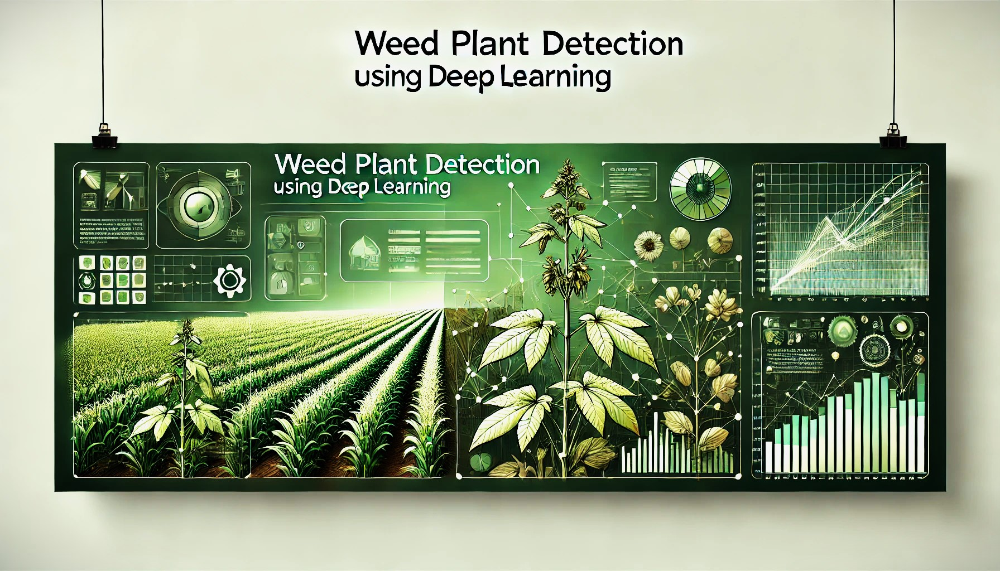

Projects
Audio Signal Comparison using Python
• Technologies: Python, Librosa, NumPy, Sounddevice, FFT
• Developed a Python-based model to authenticate mechanical component sounds in car manufacturing for Toyota Motors, Canada.
• Leveraged advanced audio processing techniques to ensure accurate signal validation.

Weed Plant Detection using Deep Learning
• Technologies: Deep Learning, Python, YOLOv8, Computer Vision
• Built a Deep Learning model to detect weed plants among crops using camera-based systems.
• Facilitated improved agricultural productivity by reducing human effort and manpower through AI-driven solutions.

Online Bus Reservation System using Django
• Technologies: HTML, CSS, JavaScript, Django, Database Integration
• Developed a full-stack web app for seamless bus ticket booking with interactive UI and database integration.